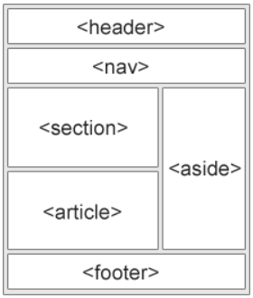

Ana Sayfa
Semantik Etiketler

<article> : Bağımsız, müstakil içerikler tanımlar. Bu etiketle işaretlenen içerik sitenin geri kalanından bağımsız olarak dağıtmak mümkün olmalıdır. Şu içerikler <article> etiketi ile işaretlenebilir; Forum Yazıları, Blog Yazıları, Haberler, Yorumlar
<aside> : İçerikte bulunan bir yerle ilgili açıklama yapmak için kullanılır. <aside> etiketi içerikle ilgili olmalıdır.
<details> : Kullanıcı tarafından görüntelenip gizlenebilen ek bilgiler tanımlar. <details> etiketi açılıp kapanabilen etkileşimli bir nesne tanımlar. <details> etiketi içerisine bir çok içerik konulabilir. <details> etiketi open özelliği tanımlıysa içerik sayfa ilk yüklendiğinde görünürdür.
| <details> Özellikleri ve Değerleri |
| Özellik |
Tanım |
Değer |
Tanım |
| open |
Sayfa ilk yüklendiğinde içeriğin görünür olduğunu belirtir. |
open |
Liste öğesinin değerini belirtir. |
<figcaption> : <figure> etiketi için bir başlık tanımlar. <figcaption> etiketi <figure> etiketinin ilk veya son etiketi olarak tanımlanabilir.
<figure> : Çizimler, fotoğraflar, kod listeleri gibi bağımsız içerikleri belirtir. <figure> etiketi içeriğin ana akışıyla ilgili olsa da, bağımsızdır.
<footer> : Bir belge veya bölümün altbilgisini tanımlar. <footer> etiketi yapısına uygun içerik barındırmalıdır. <footer> etiketi genellikle telif hakkı bilgileri, kullanım koşulları, iletişim bilgileri vb. bilgileri üzerinde tutar.
<header> : Belge veya bir bölüm için başlık tanımlar. Bu etiket taşıyıcı için navigasyon menüleri veya tanıtıcı içerik olarak kullanılmalıdır. Bir belgede birçok <header> etiketi kullanılabilir. <header> etiketi <footer>, <address> veya başka bir <header> etiketi içerisinde tanımlanamaz.
<main> : Bir belgenin ana içeriğini belirtir.
<mark> : işaretlenmiş metin tanımlar. Eğer metinin bir parçasını işaretlemek, vurgulamak isterseniz <mark> etiketini kullanılır.
<nav> :
Gezinti(navigasyon) linlerinin bulunduğu bölümü tanımlar. Belgenin tüm link grupları <nav> etiketi ile işaretlenmemelidir. <nav> etiketi sadece ana blokta bulunan bağlantılar için tasarlanmıştır.
<section> : Belgede bir bölüm tanımlar. Bölümler üstbilgi, altbilgi gibi sayfanın herhangi bir bölümü olabilir.
<summary> : <details> etiketinin başlığını tanımlar. Başlık bilgisi içeriğin gösterilip/gizlenmesi için tıklanabilirdir.
<time> : Gregoryan takvimine göre saat veya tarih tanımlar.